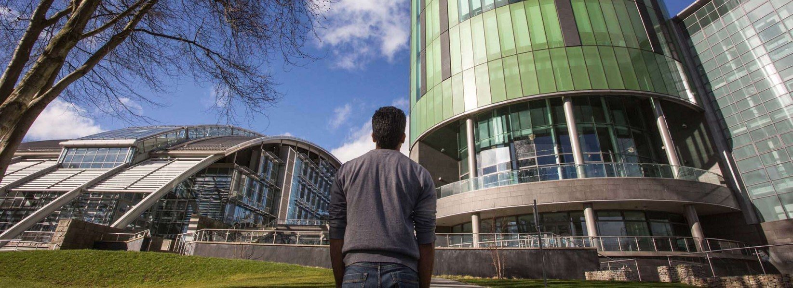
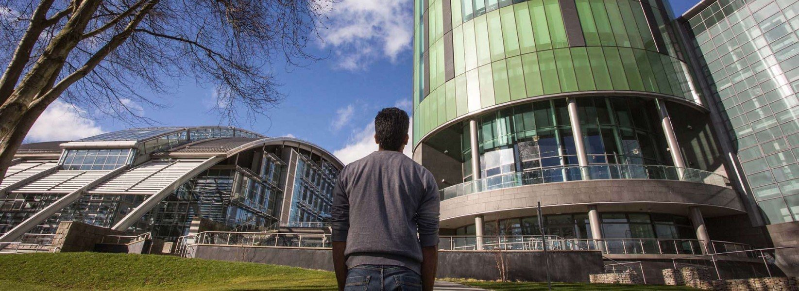

Welcome to the School of Computing and Digital Media
A computer is a machine that can be instructed to carry out sequences of arithmetic or logical operations automatically via computer programming. Modern computers have the ability to follow generalized sets of operations, called programs.
These programs enable computers to perform an extremely wide range of tasks. A "complete" computer including the hardware, the operating system (main software), and peripheral equipment required and used for "full" operation can be referred to as a computer system. This term may as well be used for a group of computers that are connected and work together, in particular a computer network or computer cluster.
More about computers!
Computers are used as control systems for a wide variety of industrial and consumer devices. This includes simple special purpose devices like microwave ovens and remote controls, factory devices such as industrial robots and computer-aided design, and also general purpose devices like personal computers and mobile devices such as smartphones.
The Internet is run on computers and it connects hundreds of millions of other computers and their users
And even more!
Early computers were only conceived as calculating devices. Since ancient times, simple manual devices like the abacus aided people in doing calculations. Early in the Industrial Revolution, some mechanical devices were built to automate long tedious tasks, such as guiding patterns for looms. More sophisticated electrical machines did specialized analog calculations in the early 20th century.
The first digital electronic calculating machines were developed during World War II. The first semiconductor transistors in the late 1940s were followed by the silicon-based MOSFET (MOS transistor) and monolithic integrated circuit (IC) chip technologies in the late 1950s, leading to the microprocessor and the microcomputer revolution in the 1970s.